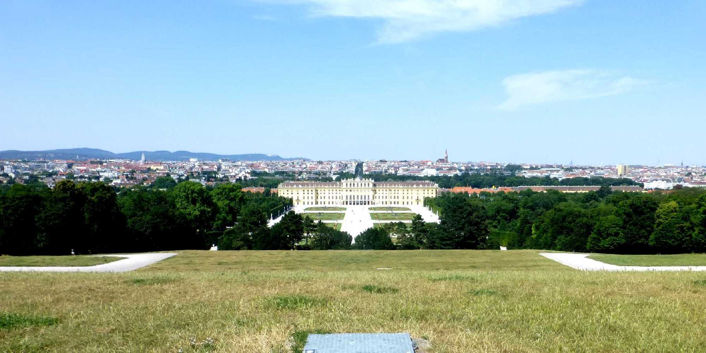
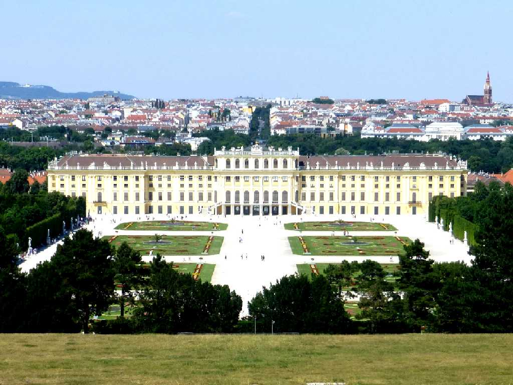
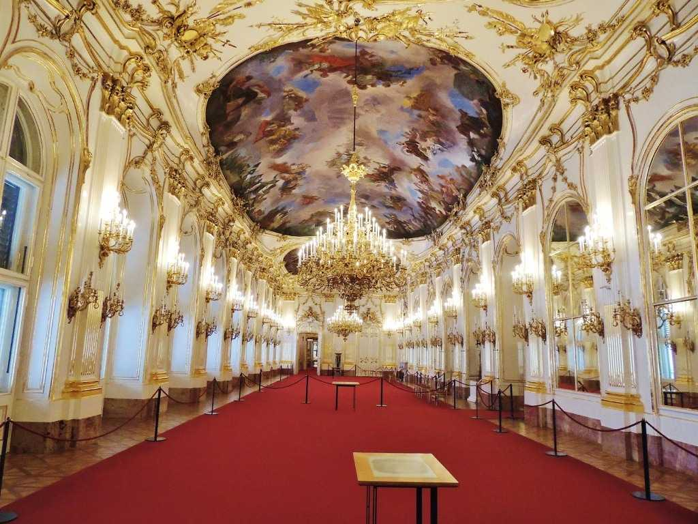
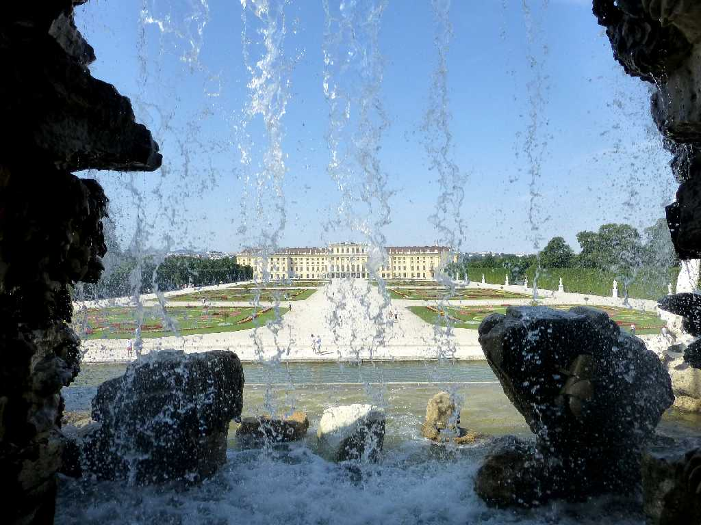
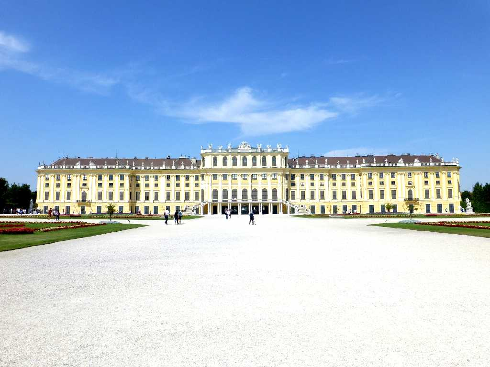
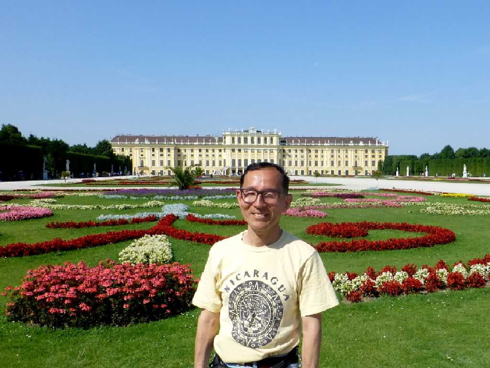
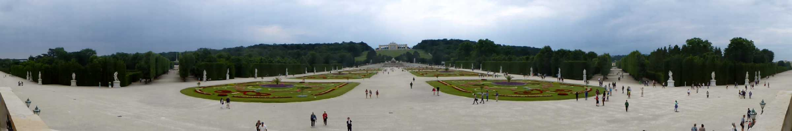
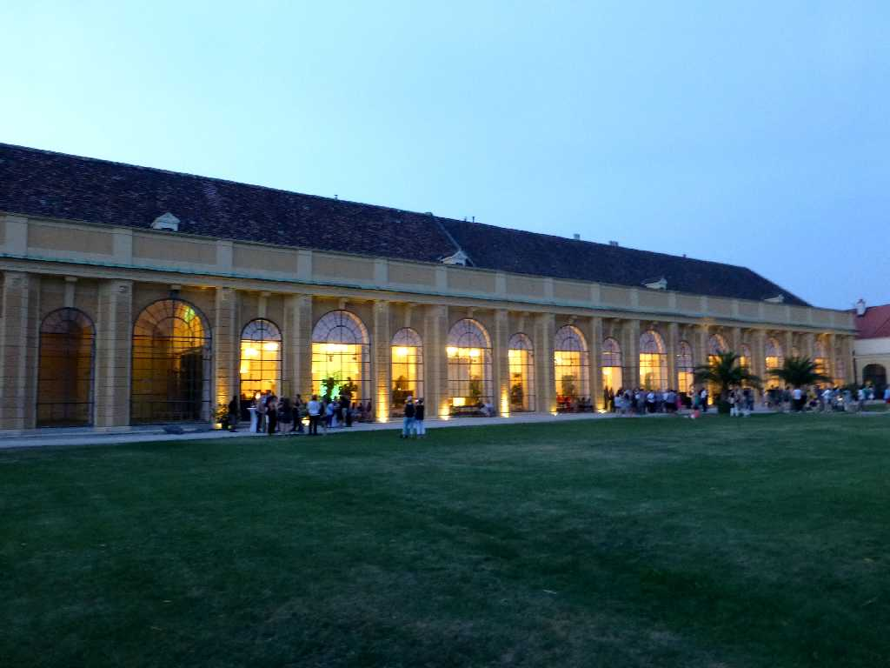
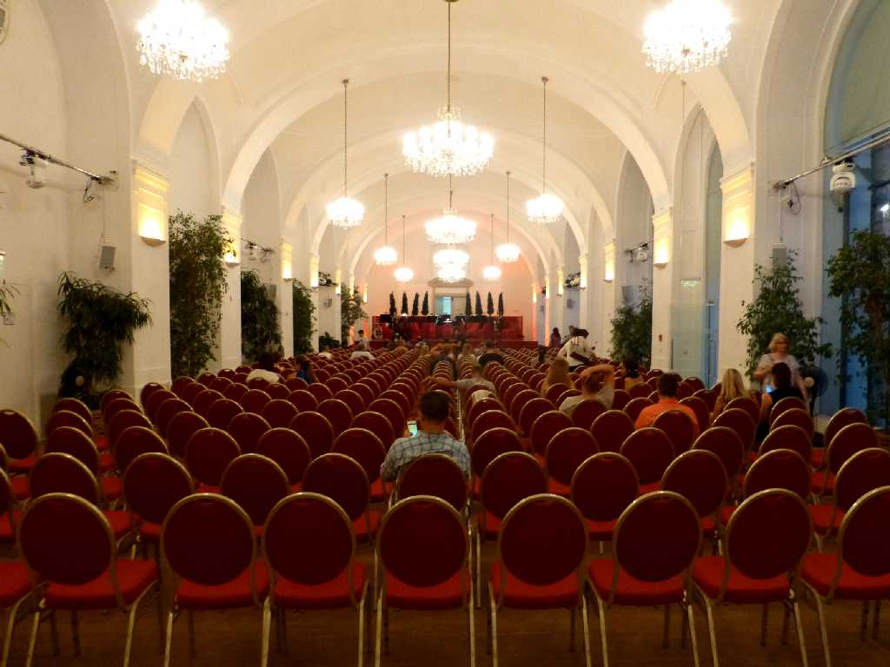
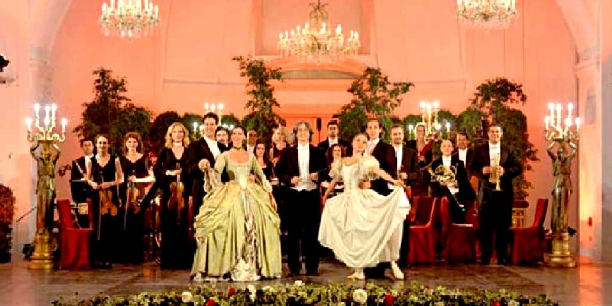

Schönbrunn Wien
ハプスブルク王朝の離宮として創られたシェーンブルン宮殿

Schloß Schönbrunn

Schloß Schönbrunn
１８１４年ウィーン会議の舞台となった大広間 会議は踊る されど会議は進まず
Gloriette Schönbrunn

Neptun Brunnen Schönbrunn

Schloß Schönbrunn

July 5 2015 Schloß Schönbrunn

Gloriette Neptun Brunnen Schönbrunn Garten

Orangerie Schloß Schönbrunn

Schönbrunner Schlosskonzert Orangerie
シェーンブルン宮殿コンサートでモーツアルトとシュトラウスの名曲を鑑賞

Schönbrunner Schlosskonzert Orangerie